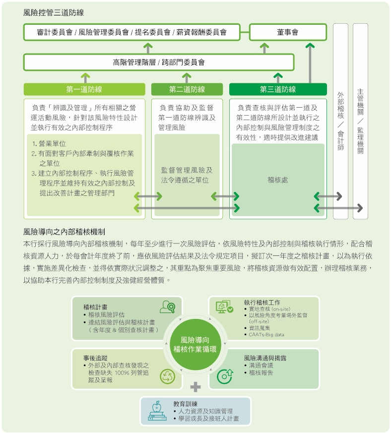
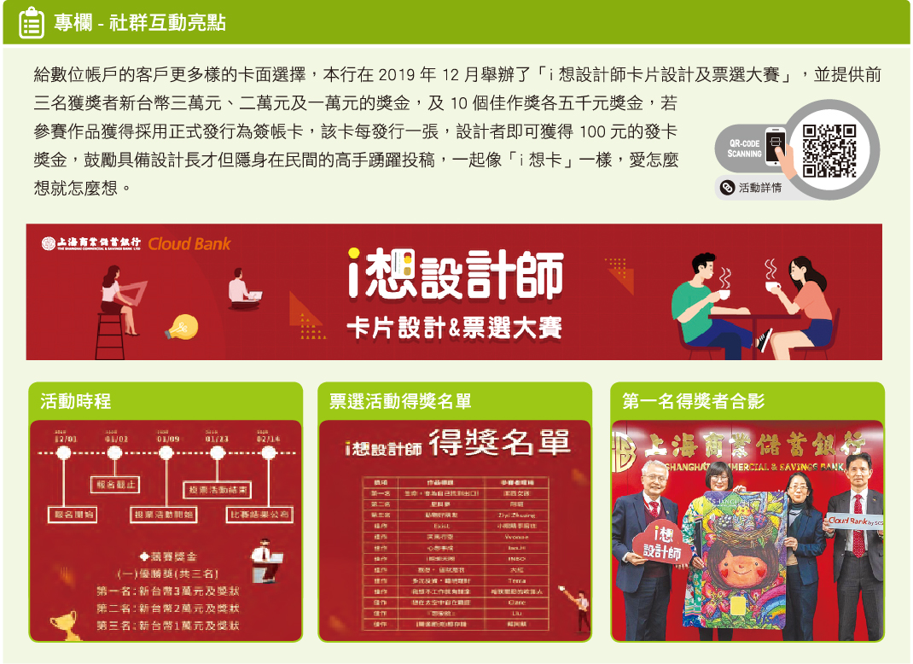

隨著金融市場國際化程度日益加深、以及利害關係人對於企業營運績效、風險管控、資訊透明揭露等議題日益重視，本行為落實企業經營責任，持續精進公司治理相關措施，除訂定「公司治理實務守則」，並持續強化董事會及其下功能性委員會之職能，更於2018年設置公司治理主管，期望透過完善制度與組織架構，提升公司策略管理效能及監督管理者之行為，確保董事會與管理階層能以符合公司與全體股東最大利益的方式達成營運目標，進而提升整體競爭力。
附錄檔案：公司治理實務守則
董事會成員:本行董事會依據法令、公司章程及股東會決議行使職權，現有董事9人及獨立董事3人，每季召開董事會；另董事互選4人為常務董事(其中常務獨立董事1人)，每月召開常務董事會。董事平均任職年數為19.75年。
附錄檔案：詳見附檔
本行已建立完整之董事提名與遴選制度，並將董事成員多元化納入考量，董事會成員提名與遴選條件不因國籍、種族、性別、年齡等而有所差異，並將多元化專業知識及技能納入考量，目前董事會成員專業涵蓋商務、資訊、法務、財務、會計或銀行業等領域，由金融業、學界、產業界等專家共同組成董事會，確保其決策品質。
為落實公司治理並提升本行董事會功能，建立績效目標以加強董事會運作效率，已於2019年初訂定「董事會績效評估辦法」，未來除將每年針對董事會、功能性委員會運作情形、以及董事會成員績效進行內部評估外，得每三年委由外部獨立機構或專家團隊進行評估。 本行於2019年進行首次董事會及功能性委員會內部績效評估，評估結果如下，評估結果經提名委員會審議提報董事會，作為遴選或提名董事及訂定薪資報酬之參考依據。(本次評估方式採5等級方式)
本行董事之酬勞係根據本行公司章程，每年度營業純益於完納一切稅捐並彌補以往年度虧損後，依法令規定提列法定盈餘公積，再依法令規定或視營運需求，提列或迴轉特別盈餘公積。如尚有盈餘則併同以前年度累積未分配盈餘，由董事會議定分配案，提出於股東常會請求承認。本銀行年度如有獲利，應以不超過當年度獲利狀況之千分之六分派董事酬勞。但公司尚有累積虧損時，應予彌補。
此外，董事會酬勞亦將考量董事會及董事個別績效評估結果，評估其對公司整體目標與任務之掌握、對公司營運之參與程度、內部控制等，其內涵包含本行在永續發展與ESG(經濟、社會、治理)相關目標與策略，以確保董事對本行永續風險之理解與監督之有效性。
2019年董事酬勞為新台幣5,800萬元(不含兼任員工酬勞)，約占當年獲利狀況之0.3956%。
總經理及副總經理之酬金則根據本行薪酬政策、薪酬管理辦法、員工酬勞分配辦法及員工服務待遇辦法等辦理。執行長的年度獎酬亦會與當年度全行目標及盈餘達成狀況相互連結。
此外，本行設置薪酬委員會定期檢討經理人績效評估與薪資報酬之政策、制度、標準與結構，以及定期評估並訂定經理人之薪資報酬，並將所提建議提交董事會討論。
注意事項：
- 持有股份數量是根據任職者與其配偶，未成年子女與利用他人名義持股計算。
- 持有股份市值以2019年度每月平均收盤價之加總除以12收盤價計算。
- 副總經理級含榮康信、林志宏、郭進一、彭國貴、黃文華、謝芳蕙、劉志剛、單永濤、洪修誠。以平均值做計算。
金管會近年持續加強對於銀行業防制洗錢及打擊資恐、銀行內控與法令遵循的要求，本行已訂定集團防制洗錢政策、程序，於法令遵循處之下設立專責之「防制洗錢及打擊資恐中心」及專責主管，同時也設立跨部門之「防制洗錢及打擊資恐委員會」，於各營業單位設置防制洗錢及打擊資恐之督導主管，建置由上到下層層管理體制。此外，也委聘外部專業輔導顧問，加強系統功能，逐步強化防制洗錢與打擊資恐之作業規範、系統與監控機制。
上海商銀秉持誠信經營，除嚴格依循各項法規，也持續精進更完善之制度與流程，本行已訂定「誠信經營守則」、「道德行為準則」及「誠信經營作業程序及行為指南」，具體規範本行人員於執行業務時應注意之事項，嚴格要求經營管理團隊及員工需遵守誠信經營相關規範，並透過教育訓練及宣導、以及徹底落實內部控制及稽核制度等，持續落實資訊充分及透明揭露、精進內部控制及稽核制度等方面展現具體作為，將誠信經營內化為企業文化，以提升外部利害關係人之信賴，並定期向董事會報告結果。
本行已訂定「處理檢舉案件作業辦法」，鼓勵員工檢舉具體違法情事，並將盡全力保護檢舉人，包括其個人資料之保密及使其權益不受影響。此外，為確保同仁理解反貪腐相關規範，除透過行內訊息通告、單位主管通告、業字通告、早會等管道進行宣導，涵蓋全行100%員工，針對所有董事會成員亦透過公司治理論壇進行反貪腐相關溝通。此外，也依員工職級、業務類型等規劃反貪腐教育訓練課程，2019年辦理情形如下。
本行遵循政府政策與相關法令規定辦理業務，設有隸屬於總經理之法令遵循處，負責法令遵循制度及防制洗錢與打擊資恐制度之規劃、管理及執行，並指派高階主管擔任總機構法令遵循主管，綜理法令遵循事務，每半年向董事會及審計委員會報告法令遵循執行情形，內容並涵蓋對各單位就法令遵循之重大缺失或弊端分析原因、可能影響及提出改善建議。
法令遵循處由專人負責蒐集最新法令，透過「法令新訊」系統傳送相關單位，配合法令異動，修訂相關業務規章及手冊。法令遵循處運用該系統追蹤管理，以確認各項作業及管理規章適時更新。
本行於全行各單位均設有法令遵循主管，負責法令宣導及法令遵循作業之執行。法令遵循處除督導各單位法令遵循主管落實相關規範之導入與實施外，每季並安排相關訓練課程，持續對各單位法令遵循主管進行法規宣導及訓練。
各單位每半年均進行法令遵循自評工作乙次，協助與促使同仁對法令之認知與遵循，另不定期辦理特定書面查核，加強各單位法令遵循之認知與落實執行，另每月請海外分行就法令遵循執行情形彙報，每季與海外分行法令遵循主管進行電話會議，加強與海外分行之溝通及督導。
近年國內外對於企業稅務透明揭露關注日益提升，本行已訂定稅務政策，其內涵精神呼應本行秉持誠信穩健核心原則推展事業版圖之營運策略、以及本行企業社會責任願景，透過稅賦善盡企業社會責任、達到與社會共榮共好之目標，同時遵循國際政策落實稅務責任，有效管理稅務風險及創造公司長期價值。
上海商業儲蓄銀行已制定稅務政策及關係人交易政策，請詳下附加檔案:
上海商銀依業務地區別損益評量各部門績效，2018年利息淨收益為新台幣272億元，營業收入為新台幣371億元，稅前淨利為新台幣229億元，經由利息產生之淨收益達淨收益73%，為主要營運項目，所得稅費用為新台幣46億元，有效稅率於台灣及香港分別為22%及19%。
2018年營收狀況如下：
上海商銀依業務地區別損益評量各部門績效，2019年利息淨收益為新台幣299億元，營業收入為新台幣410億元，稅前淨利為新台幣246億元，經由利息產生之淨收益達淨收益73%，為主要營運項目，所得稅費用為新台幣49億元，有效稅率於台灣及香港皆為20%。
2019年營收狀況如下：
上海商銀在世界各地經營與拓展業務，同時遵循各營運據點所屬國家之稅法規定。
2019年度上海商銀於全球納稅金額為新台幣29億元，現金有效稅率為11.79%，低於2018年有效稅率23.58%，主要係因香港子公司繳納稅額時點差異所致。
就區域別分析，因香港與台灣為主要營運區域，2019年繳納稅額分別占全球稅款為45%與52%。
2018及2019年度納稅情況占比如下：
近兩年度集團營運狀況比較:
因本公司海外子行所占合併營收比例影響甚大，經考慮按權益法認列國外被投資公司之投資收益與其他未實現金融商品評價利益等產生之遞延所得稅負債影響數，調整後之合併公司近兩年度有效稅率由20%提升之22%。
上海商銀合併淨收益依事業部門別區分，以企金52%為最大占比，第二為個金15%，第三為財金14%，第四為財富管理11%，第五為總行為8%。
上海商銀風險管理組織架構係以董事會為最高管理階層，其下設置風險管理委員會統籌全行風險管理，並於總經理下設風險管理處負責建立全行性風險管理機制，獨立行使全行風險管理之職權，各權責單位視其規模及重要性、複雜度設置風險管理人員，負責執行各權責單位之風險管理。此外，總經理下另設置授信審議委員會及投資審議委員會分別負責授信風險管理與投資風險管理。

本行已建立完整風險鑑別與因應流程，除針對市場、信用、國家、作業、資產負債等重要風險項目進行管控，針對近年新興議題(如資訊安全)也持續關注，並訂定相關因應對策進行管控，盡力降低風險發生機率或可能衝擊。
隨著數位金融逐漸普及，個人資料安全、資訊安全防護等議題也成為金融業近年必須關注的重點。本行體認此議題重要性，已取得ISO27001國際ISMS資訊安全管理系統國際標準認證，並訂定資訊安全目標及設立跨部門之資訊安全委員會，每季召開會議，針對資訊安全政策、風險評估、相關事件調查報告及改善措施、相關法規等進行管理。
透過跨部門資訊安全管理委員會，定期針對重要業務及行內資訊安全重要議題進行討論、及督導，並規劃全行資訊安全控制措施之執行。此外，更聘任本行董事擔任資訊安全顧問，協助資訊安全治理事務，表達董事會對資訊安全之支持。
為確保本行資訊安全管理，透過資安防護、相關機制與控管機制之建立、以及人才培訓等方式，強化全體員工資訊安全認知及落實管理。

網路銀行與數位帳戶

在現今網路的時代，上海商銀深知客戶需要最即時便利的服務，因此在2019年本行針對網路銀行服務導入眾多新穎功能，深獲企業用戶與個人用戶的青睞。

為響應財政部宣誓行動支付比率達90%目標，本行以「行動支付」應用發展為基礎，創造國內及跨境的全方位電子金流服務，目前已接軌國際，與財金公司主導的「台灣Pay」合作，同時本行另與科技公司合力研發出給商家使用的「一碼GO」(多元支付整合收款服務)。
本行目前在一碼GO收款方面，已整合台灣Pay、支付寶、信用卡、LINE Pay、Pi拍錢包、橘子支付及票證機構的悠遊卡、愛金卡等支付工具，由店家自行決定採用及申請辦理的支付工具種類，便可簡單地透過手機掃碼或票證卡感應方式完成付款交易，讓本行特約店客戶及消費者更加便利。在2019年本行已成功開拓數個傳統市場、夜市、停車場等場所。

本行透過多元管道蒐集客戶意見，並訂定「銀行客戶訊息管理辦法」，針對客戶提出之訊息，訂定處理流程、回覆期限、客戶資料保密、後續追蹤稽核、人員訓練等相關規範。對於客戶因消費者權益事件所提出之申訴管道，可由24小時電話、E-mail或書面具名方式交付本行，所受理申訴、調查及回應申訴程序皆有記錄及處理時程，藉以確保消費爭議處理機制之有效性。
本行於2019年新成立跨部門之消費者保護委員會，以落實公平待客原則以及金融商品爭議事件之處理與追蹤等事務。
此外，本行各項新種理財商品上架銷售前，均經法令遵循主管及法遵單位審視符合相關法律及法令標準，並針對特定商品成立商品審議小組，由總行與業務管理單位代表針對產品之內容、適法性與風險屬性等進行評估審議，於商品審議通過後方可上架銷售。商品審議機制係為保障投資人之權益，以增進應有之企業社會責任。客戶欲購買金融商品前須完成關懷客戶(KYC, Know Your Customer) 問卷之填寫，其用意在於銀行提供相關金融服務前，評估客戶風險承受度，再透過銷售控管機制，規範業務人員針對客戶投資屬性推介適合之商品(KYP, Know Your Product)，網路銀行平台及分行下單作業系統，均由系統檢核客戶與商品風險屬性資格是否相符，如不符合則無法交易，以充分落實商品適合度審查以及審慎協助客戶評估所申購之投資理財商品，防範客戶本身逾其所能承擔之投資風險度。為能充分瞭解客戶以提供符合客戶需求之理財服務，另對於銷售後之服務亦有控管機制，定期及不定期檢視客戶投資情況，以保全客戶投資資產。
本行之個人資料保護制度曾於2016年取得國際個人資料管理制度（Personal Information Management System；PIMS）認證，成立個人資料保護小組，經由風險評估、安全規範、系統管理、流程改善及教育訓練等構面，持續由規劃、執行、查核及行動（PDCA循環）之模式，強化並保護於個人資料生命週期內所取得之客戶個人資料，自2017年起依「金融控股公司及銀行業內部控制及稽核制度實施辦法」規範，改由會計師實地查核本行個人資料管理制度之設計及執行情形，並辦理確信，每年均呈報金管會核備。